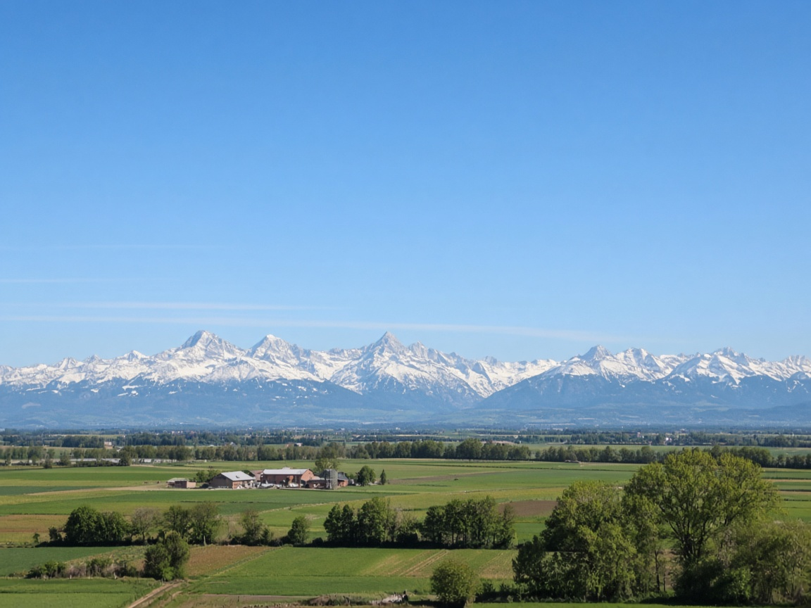

Y
Producibilità
Y = G × Fo × Fs × Fi
Quanti kWh rende un kWp su questo tetto.
VARIANTE 1 · EDITORIALE
Prima la Home, poi i numeri di questa simulazione, poi variabili, relazioni e passi. Il metodo è di SeedElio, firmato da Dario Bonaldo.
Valori di esempio
Questi sono i valori di esempio, quelli di partenza del simulatore.
12,8 kWp
TAGLIA
13357 kWh
PRODUZIONE
76%
AUTOCONSUMO
3845 €
RISPARMIO · 4,6 anni

Zona
Nord Italia (1.150 kWh/kWp)
Spesa
140 €/mese
kWh
400 kWh/mese · 13375 kWh/anno
Profilo
Famiglia Fuori Casa / Pendolari
Carichi
Auto 12.000 km (1.920 kWh), Pompa 4 kW (6.400 kWh), Induzione 7 pasti (255 kWh)
Orientamento
Sud-Est / Sud-Ovest (90%)
Ombre
0% · Piano sole
Ottimizzatori
Auto · Analisi suggerita
Inclinazione
22°
Modulo
0,48 kWp
Accumulo
25,0 kWh
p non è i 0,35 € della bolletta. È il prezzo con cui il metodo valorizza ogni kWh autoconsumato.
C
Fabbisogno annuo
400 kWh/mese · 13375 kWh/anno
G
Irraggiamento di zona
Nord Italia (1.150 kWh/kWp)
Fo
Fattore di orientamento
Sud-Est / Sud-Ovest (90%)
Fs
Ombre, corrette dagli ottimizzatori
0% · Piano sole
Fi
Fattore di inclinazione
22°
Qa
Quota coperta dal profilo
76%
p
Prezzo del kWh autoconsumato
0,378 €/kWh
c
Costo semplificato dell'impianto
1.380 €/kWp
km
Percorrenza dell'auto
12.000 km
kW
Potenza elettrica della pompa
4 kW
pasti
Pasti caldi a settimana
7 pasti/settimana

Y
Y = G × Fo × Fs × Fi
Quanti kWh rende un kWp su questo tetto.
kWp
kWp = C / Y
L'impianto che copre il fabbisogno.
E
E = kWp × Y
Energia annua stimata.
auto
kWh auto = min(E, C) × Qa
Dipende da quando sei in casa.
R
R = kWh auto × p
Euro all'anno, a quel prezzo.
anni
anni = (kWp × c) / R
Anni per riprendere il costo.
km
kWh = km × 0,16
12.000 km → 1.920 kWh/anno. Coefficiente 0,16 kWh per chilometro.
kW
kWh = kW × 1.600 h
4 kW → 6.400 kWh/anno. Coefficiente 1.600 ore equivalenti.
pasti
kWh = pasti × 52 × 0,7
7 pasti/settimana → 255 kWh/anno. Coefficiente 0,7 kWh a pasto, per 52 settimane.
Auto, pompa e induzione non sono un dettaglio: entrano nel fabbisogno C prima della taglia.
0,16
kWh / km · AUTO
kWh = km × 0,16. 12.000 km → 1.920 kWh/anno.
1.600
ORE · POMPA
kWh = kW × 1.600 h. 4 kW → 6.400 kWh/anno.
0,7
kWh / PASTO · 52 SETT.
kWh = pasti × 52 × 0,7. 7 pasti/settimana → 255 kWh/anno.
L'anteprima resta in questa pagina. Il PDF si scarica solo dopo nome ed email: resta sul dispositivo e non viene inviato.